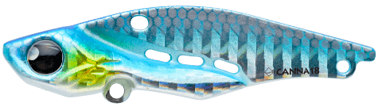
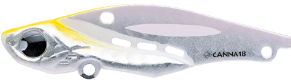
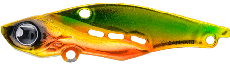
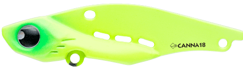

カンナ18
（CANNA18）
カンナ18（CANNA18）はPOP SEA CREW（ポップシークルー）のバイブレーションです。
軽い引き心地で幅広い速度域をカバー。主なターゲットはシーバスです。
巻き始めの動き出しの良さを保ちながら、小気味よいバイブレーションと軽い引き心地で、水深の浅い港湾部や河川など幅広い速度域で使えるバイブレーションです。

画像出典:POP SEA CREW公式HP
スペック
- メーカー
- POP SEA CREW（ポップシークルー）
- タイプ
- シンキング
- 全長
- 62mm
- 重量
- 18g
- フック
- #8
- リング
- #2
- アクション
- バイブレーション
- 価格
- 1,485円（税込）
▼今すぐチェック

カンナ18の特徴
ボトムの「ヒラ打ちドリフト」と、上下左右のダート
-
動き出しが良く、引き心地が軽い
巻き始めからすぐに動き出し、小気味よいバイブレーションと軽い引き心地で、幅広い速度に対応する。
-
ボトムのヒラ打ちドリフト
V字型のボトム形状と3passing water holeの効果で、ボトムでの「ヒラ打ちドリフト」をコントロールしやすい。ボトムに張り付く魚に効果的。
-
上下左右にダート
ロッドを上下に動かすと、上下左右にダートするバランス設定。ルアーを追い切れない魚や、ただ巻きでは見切る魚に対応する。
カンナ18の使い方
基本はただ巻きです。巻き始めから動き出すので、浅い場所でもすぐに泳がせられます。
ボトムにいる魚には、着底させてから流れに乗せてヒラ打ちさせるドリフトを。ただ巻きで見切られる時は、ロッドを上下に動かしてダートさせてみましょう。
カンナ18の得意な状況
水深の浅い港湾部や河川など、シーバスのいる場所を幅広い速度で探りたい時が得意です。
ボトムに張り付いている魚や、ただ巻きのルアーに反応しない魚にも使えます。
ワンポイント
小型・軽量のカンナ15もあります。浅い場所や小さめのベイトの時は15、飛距離や少し深いレンジが必要な時は18と使い分けましょう。
オススメカラー
カンナ18は全10色。そのうち4色を紹介します（画像は公式のカラーチャートより）。

#001 オーシャンブルーまず1つ選ぶならこの色。澄んだ潮の日中に。

#004 ロイヤルコーラルピンクシルバー系の光沢。澄んだ潮の日中に。

#007 サンセットゴールドゴールド系のフラッシングで、濁りの日や朝夕に。

#009 マットチャートマットチャートで、濁りや夜に。
画像出典:POP SEA CREW公式HP
カンナ18に似ているルアー
-
 カンナ15
ポップシークルー
詳細はこちら＞
カンナ15
ポップシークルー
詳細はこちら＞
同じシリーズの小型モデル。
-
 ディモル70
レガーレ
詳細はこちら＞
ディモル70
レガーレ
詳細はこちら＞
同じ18gクラスのバイブレーション。2アイシステムで強弱を変えられる。
-
 TNバイブレーション
ジャッカル
詳細はこちら＞
TNバイブレーション
ジャッカル
詳細はこちら＞
O.M.Sを搭載したバイブレーションの定番。